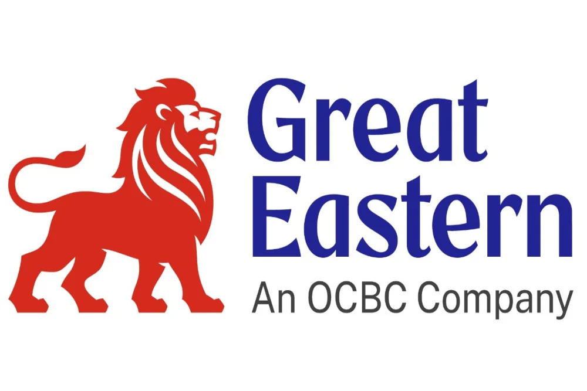
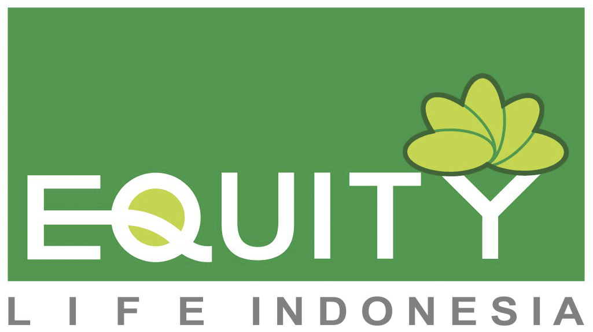

6+ years engineering enterprise IT Infrastructure and DevOps. Based in Jakarta, Indonesia.

PT Great Eastern General Insurance Indonesia is a general insurance company owned by Great Eastern General Insurance Limited which is a wholly owned subsidiary of Great Eastern Holdings. Founded in 1908, Great Eastern is a subsidiary of OCBC, Singapore's oldest bank, having been established since 1932.

PT Equity Life Indonesia is the Insurance company providing its services in Life Insurance, Health Insurance. Established in 1987, with more than 34 valuable years in service, Equity Life Indonesia has provided life and health protection for over 3 million individuals and group customers in cities all over Indonesia.
Bridging on-premises VMware vSphere clusters with AWS cloud infrastructure to establish automated, resilient multi-environment deployment pipelines.
Standardizing secure build-test-deploy cycles with integrated static code quality checks and centralized encryption for enterprise access control.
Unified monitoring, centralized log telemetry, and proactive host-based intrusion detection safeguarding hybrid insurance infrastructures.
Architecting high-security encrypted site-to-site connectivity interconnecting 11 nationwide branch offices directly with corporate Headquarters.
GPA: 3.07/4.00
Published a final project entitled "Vehicle Tracking System (VTS) real-time positioning based on GPS with Multihop LoRa Communication".